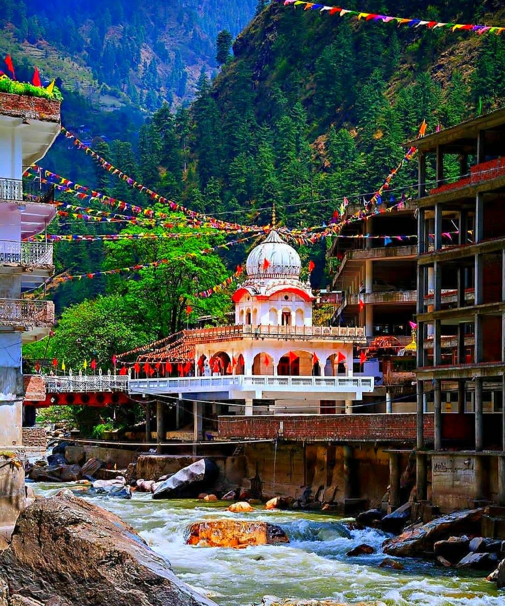

Agra is the legendary home of the Taj Mahal, which is also known as the immortal marble mausoleum and an ode to love.
One of the most famous sights in the world, the Taj Mahal attracts several thousand visitors each year.
Mumbai
By Culture Trip
While one can enjoy traditional culture and exquisite scenery in places like Rajasthan and Kerala,
Mumbai is more like the engine of India, the place where everything happens.
Goa
By Culture Trip
For the ultimate Indian beach holiday, book Goa with its intoxicating blend of white sand beaches,
fresh seafood, yoga studios and vibrant nightlife.

Manali
By Culture Trip
Manali is one of the most popular hill stations in India.
Everyone from backpackers to adventure sports enthusiasts and honeymooners flock to this scenic town all year round.